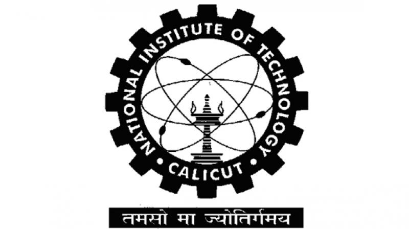

Thaju K Habeeb
Data Scientist · AI/ML Engineer
Bengaluru, India
I am a Data Scientist and AI/ML Engineer focused on applied Machine Learning, Generative AI (GANs), and scalable Data Engineering. I enjoy taking on messy, high-dimensional data problems and architecting elegant, highly-optimized predictive systems. My recent work revolves around large-scale feature engineering, modernizing legacy pipelines for exponential speedups, and leveraging deep learning to synthesize and augment data.
Education: I hold a B. Tech in Mechanical Engineering from the National Institute of Technology Calicut (2017 - 2021).
Technical Skills: Python, SQL, PyTorch, PySpark, AWS, Databricks, Git, GitHub.
My work focuses on predictive modeling and massive-scale pipeline optimization. I designed a multi-model regression system predicting customer purchase behavior across 900+ merchants, utilizing rigorous feature engineering to distill a chaotic 3,000+ variable space into 22 high-signal data points (a 99% dimensionality reduction). Additionally, I completely overhauled our legacy Python architecture into PySpark, slashing production scoring time from 80 hours to just 6 hours (a 13x speedup). I also developed specialized synthetic data pipelines in PyTorch using GANs and CTGANs for advanced data augmentation.
Here, I engineered targeted data solutions that directly impacted the bottom line. I built out a Random Forest classification system to distinguish legitimate businesses from fraudulent or inactive ones, hitting an 88% accuracy rate and drastically reducing wasted marketing spend. For complex data integration, I implemented record linkage architectures using deep string matching and GraphFrame algorithms to unify disjointed datasets, alongside creating robust, multi-tier corporate hierarchy models based on headquarters relationships.
I focused on core software engineering and system reliability. I successfully diagnosed and resolved a critical revenue-leakage bug within a major airline booking platform. I also contributed to the design and development of the core booking and cancellation API, establishing a reliable integration system for third-party affiliated agencies.

B. Tech Mechanical Engineering